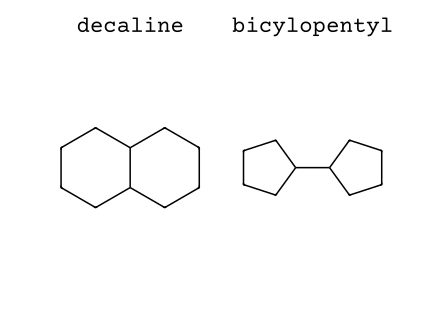
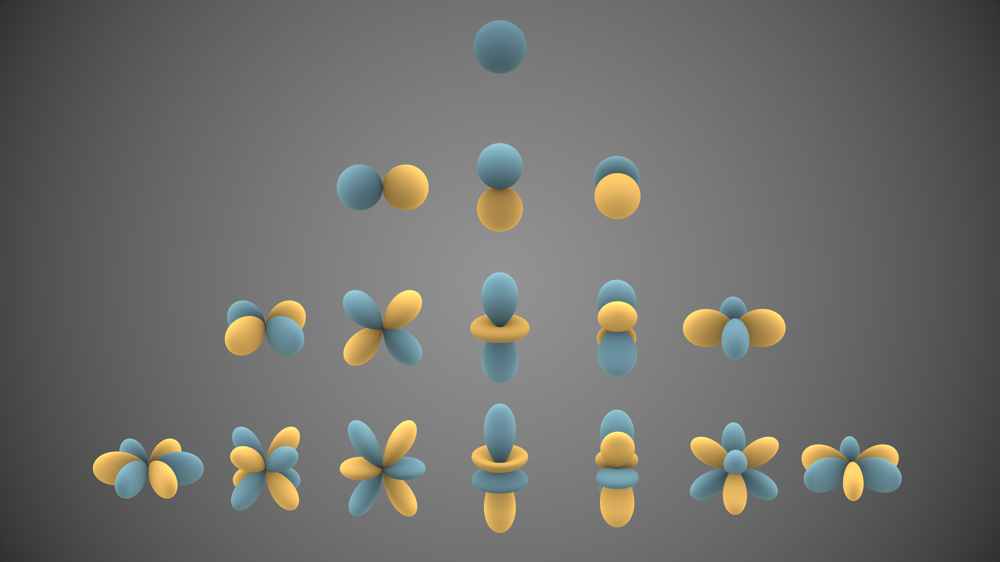
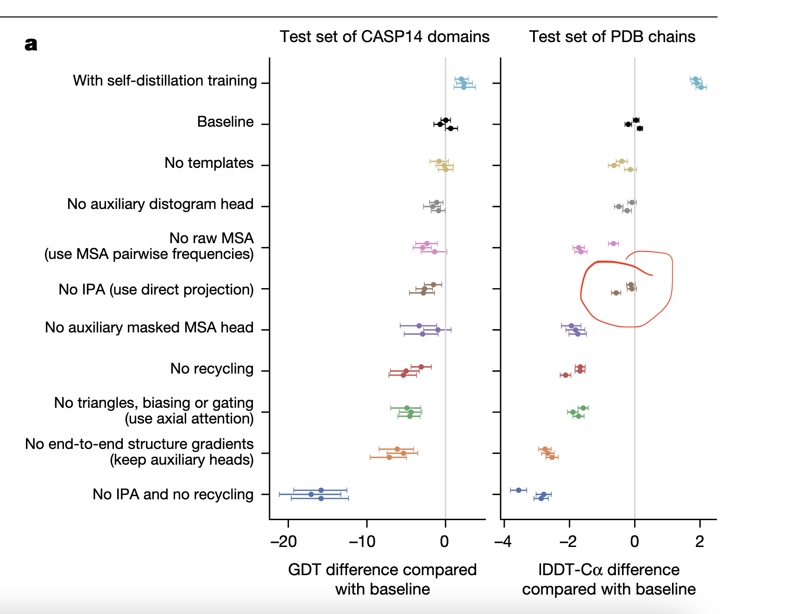
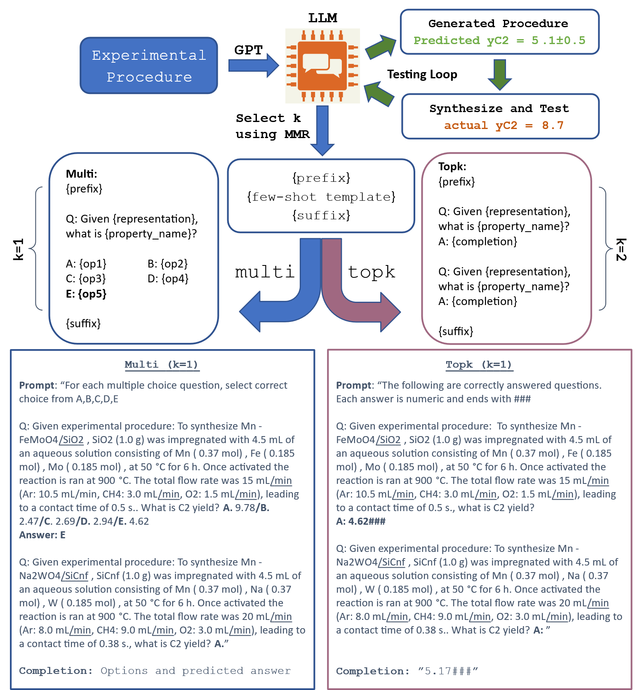
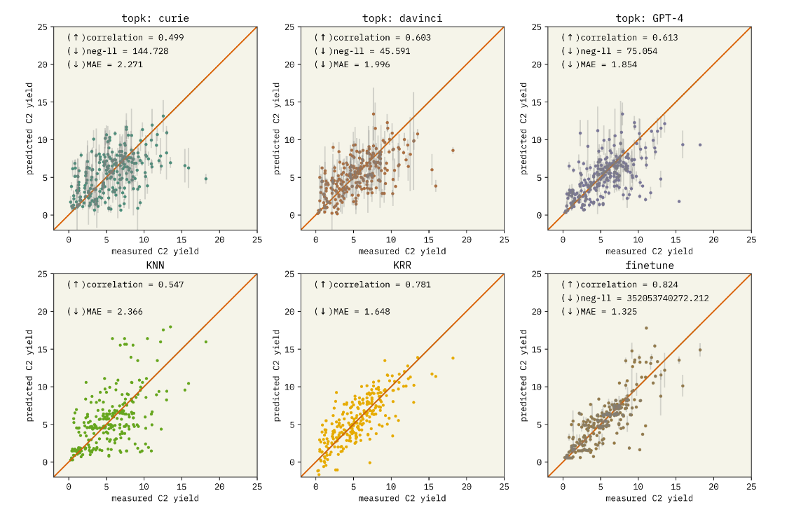
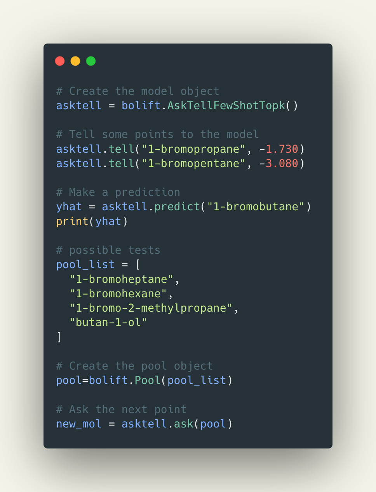

Language is the future of chemistry
Andrew White
Future House
Acceleration Consortium
August, 2023
Brief Principles of Deep Learning for Molecules
Inductive Bias
Explicit choices made in architecture that reflect data-generation or solution space.
Inductive Bias
Explicit choices made in architecture that reflect data-generation or solution space. physics
Inductive Bias
Mol Graph

Point Cloud

Inductive Bias
Mol Graph
- atom permutation equivariance
- bond permutation equivariance
Point Cloud
- atom permutation equivariance
- translation equivariance
- rotation equivariance
Inductive Bias
Mol Graph
- atom permutation equivariance
| C | O | N | $\hat{f}(x)$ | |
|---|---|---|---|---|
| 0 | 1 | 0 | 0 | 0.3 |
| 1 | 1 | 0 | 0 | 0.8 |
| 2 | 1 | 0 | 0 | 0.1 |
| 3 | 1 | 0 | 0 | 0.0 |
| 4 | 1 | 0 | 0 | 0.0 |
| 5 | 1 | 0 | 0 | 0.0 |
| 6 | 1 | 0 | 0 | 0.2 |
| 7 | 1 | 0 | 0 | 0.5 |
| 8 | 1 | 0 | 0 | 0.9 |
| 9 | 1 | 0 | 0 | 0.6 |
| 10 | 0 | 1 | 0 | 0.3 |
Inductive Bias
Mol Graph
- atom permutation equivariance
| C | O | N | $\hat{f}(x)$ | |
|---|---|---|---|---|
| 3 | 1 | 0 | 0 | 0.0 |
| 1 | 1 | 0 | 0 | 0.8 |
| 2 | 1 | 0 | 0 | 0.1 |
| 0 | 1 | 0 | 0 | 0.3 |
| 4 | 1 | 0 | 0 | 0.0 |
| 5 | 1 | 0 | 0 | 0.0 |
| 6 | 1 | 0 | 0 | 0.2 |
| 7 | 1 | 0 | 0 | 0.5 |
| 8 | 1 | 0 | 0 | 0.9 |
| 9 | 1 | 0 | 0 | 0.6 |
| 10 | 0 | 1 | 0 | 0.3 |
Inductive Bias
Example
Point Cloud
- atom permutation equivariance
- translation equivariance
- rotation equivariance
Representation and Model Decisions
SMILES
CCCC1=CC=CC=C1C(=O)
N2CCCC[C@H]2C3CCCC3
Sequence Network
(1D Conv, RNN, Transformer)
Mol Graph
Graph Neural Networks
Points
Equivariant Neural Networks
Representation and Model Decisions
SMILES
Molecular properties
Mol Graph
Atom or bond properties
Points
Spatial properties
The state of deep learning on molecules
Graph Neural Network

Graph Neural Network

Graph convolutional neural network example.
Weisfeiler-Lehman
Weisfeiler-Lehman

global stereochemistry
Equivariant Neural Networks
- Embed local 3D environment - Body order
- Message pass geometry and features - Tensor Order
Body order
Tensor order
Equivariant Message Passing
State of the field
Does it matter?
What if we use language?

Dinh, T et al 2022Arxiv 2206.06565
LIFT in Chemistry

The solubility of methanol is ____
Jablonka K. et al 202310.26434/chemrxiv-2023-fw8n4
Files as Input
Flam-Shepherd and Aspuru-Guzik 2023arXiv:2305.05708
Bayesian Optimization with Language
Requires:
- Uncertainty
- Learning
- Fast Model Updates
Adding Uncertainty
Caldas M. et al 2023arXiv:2304.05341
IUPAC Name to LogS
"The solubility of 1-bromopropane is -1.73 logS"
Caldas M. et al 2023arXiv:2304.05341
Comparisons on Solubility

Catalysis
To synthesize Mn-Na2WO4/BN , BN (1.0 g) was impregnated with 4.5 mL of an aqueous solution consiting of Mn ( 0.37 mol) , Na ( 0.37 mol) , W ( 0.185 mol) , at 50 ºC for 6 h. Once activated the reaction is ran at 900 ºC. The total flow rate was 10 mL/min (Ar: 1.5 mL/min, CH4: 5.7 mL/min, O2: 2.8 mL/min), leading to a contact time of 0.75 s.
Learning

Bayesian Optimization
Code
Use in real setting

Why LLMS?
Language has been honed for thousands of years to reflect science. It will be how we join our tools, data, and scientists.
What about the rest of machine learning? How can we bring that to language?
Let's teach models to emit language
Natural language explanation

logS = -5.69

A Perspective on Explanations of Molecular Prediction Models. JCTC 2023
Conclusions
We are on the cusp of a revolution in science -- we can connect our data, research papers, the internet, and models within one framework.
Future House
Automating science to accelerate biochemistry
questions
conflicts of interest:
OpenAI, Oloren AI, Delt4, Pauling AI, Vialacknowledgements:
nsf che #1764415, nsf cbet #1751471, nsf iis #2029095, nsf dmr #2103553, nih #R35GM137966